YAPC::Asia Tokyo 2014
YAPC::Asia Tokyo 2014
Or, “Seriously, If You Don’t Attend, You’re Missing Out On Something BIG”
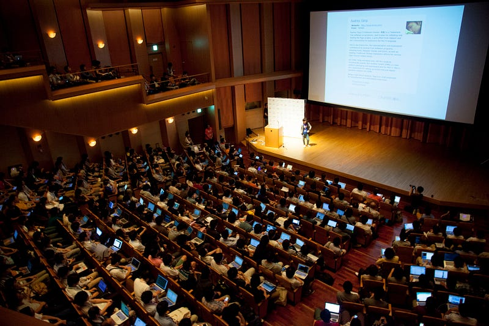
(c) Japan Perl Association
YAPC::Asia Tokyo 2014 is over. I was one of the organizers for YAPC::Asia during 2009 to 2013, but I officially retired from that position when I went up to give my closing speech for YAPC::Asia Tokyo 2013. Well, I did retire from YAPC::Asia organizer role, but I’m still the head of Japan Perl Association, who controls the financial and legal aspects of YAPC::Asia Tokyo. So I was there again, but in a much more limited capacity.
Anyway, enough about me. So in my limited role, I thought I would do what I have been doing for the last few years, which is to tell you guys what went on in YAPC::Asia Tokyo 2014, and for those of you who didn’t attend, I’m here to tell you what you missed out.
Numbers
You like numbers, don’t you? This year we gathered 1,361 people all together for this conference. Yes, we have been beating our record for the past few years, but yet again, we managed to host the biggest YAPC ever. We also had about 40 volunteer staff, 15 or so additional people operating our network, and about 50 speakers from companies like DeNA, Booking.com, Github, LINE, mixi, Gaiax, Freakout, pixiv, omoroki, etc.
Our budget was around 12million JPY. About 70~80% of it comes from our sponsors, the rest from our ticket sales.
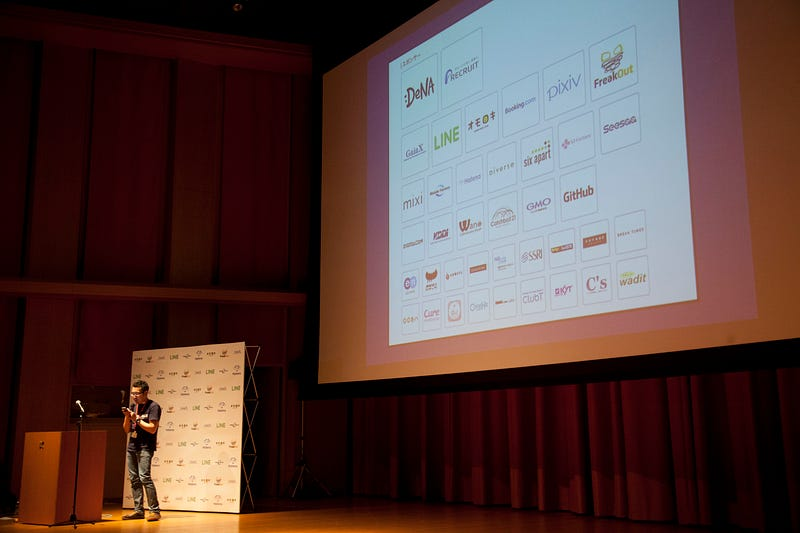
(c) Japan Perl Association
Talks
The talks topics ranged from DBIx::Class, Plack to “Things You Need To Know About PHP Before You Diss It”, Elasticsearch, Arduino, Go, Document Translation, “How To Build YAPC::Asia Tokyo’s WiFi Network”, Docker, Perl::Lint, etc, etc, etc.
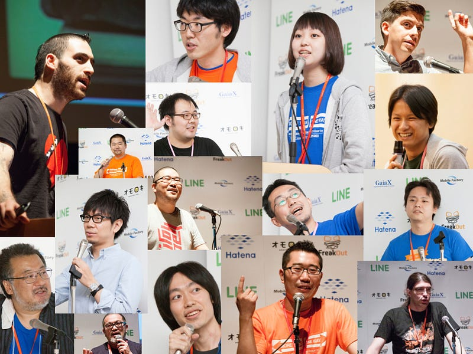
(c) Japan Perl Association
The talks were mostly in Japanese, and unfortunately we could not justify the cost of having interpreters for Japanese to English, but we did provide simultaneous interpretation for all of our English speakers so our audience could understand them better, courtesy of KY Trade! This was the first time we have done this, because… well, this year we were finally able to cover the costs!
I am proud that we cover so many different topics. I may be biased, but I think this is one of THE most interesting conferences that you can go to as a techie, because this is by far the most welcoming and talk-about-anything-as-long-as-it’s-cool conference. It is so silly to get stuck with the same people and same tech all the time.
WiFi
Yes, WiFi… we were blessed to have the help of CONBU (“Conference Network Builders”), who helped us last year. These are volunteer staff that built a custom network so that we could have 1000+ engineers all downloading/uploading random stuff all at once at our venue.
Trust me, built-in network on these venues just cannot handle this many geeks. We were so lucky to have the fabulous people of CONBU around.
Dinner/Drinks/Social
In tradition with the past YAPCs we provide the conference dinner. This was paid out by our sponsors, Booking.com and DeNA. Free meal for everyone. One thing that we forgot to handle (as it is not too common here in Japan) was to provide with proper vegan/vegetarian food. We just completely forgot. We promise we will rectify this situation when/if we do our next YAPC.
Unfortunately due to room capacity we could only accommodate 300 people out of the 1300 total, but those who were lucky enough to be able to signup for it before hand were treated with a practically non-ending buffet:
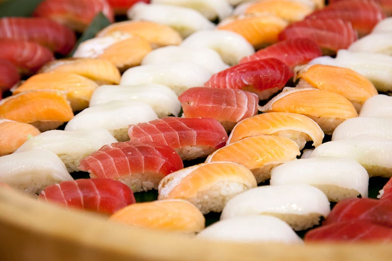
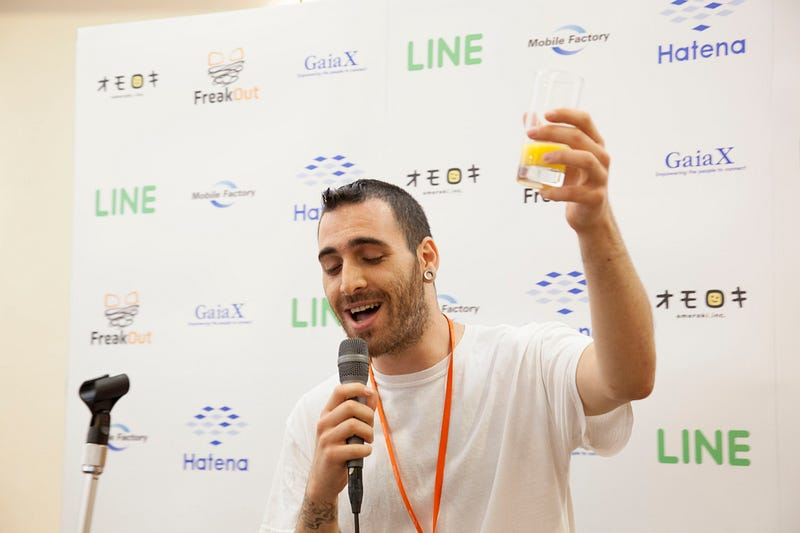
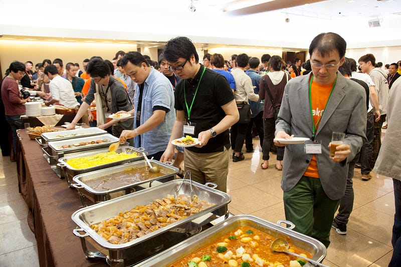
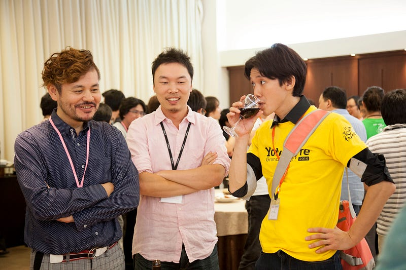
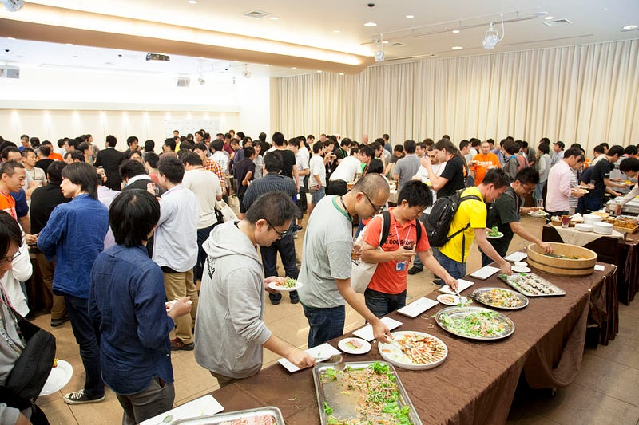
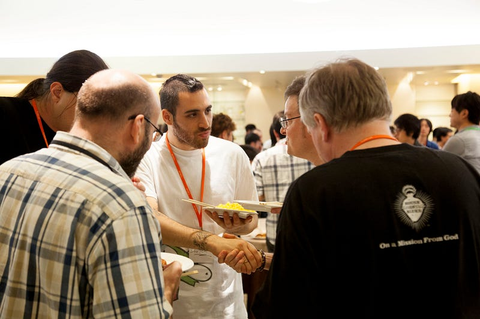
The venue for this year (and last year, incidentally) has a bar right in the same building, so people who couldn’t get into the free dinner went there. Oh but wait! This year one of our sponsors, Recruit, paid for 1000 pints of beer before hand, so attendees can grab free beers, for BOTH NIGHTS of YAPC! I have been told that our attendees did in fact consume all 2000 pints of beer that was allotted.
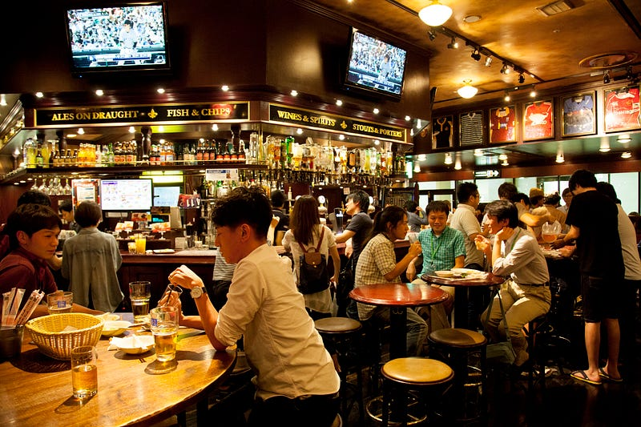
Apparently this was great thing to provide, as our foreign guests apparently had a much better chance of communicating with the shy Japanese folks over a beer or two.
Oh Well, You Couldn’t Make It?
Well, too bad. It was a great success. It was fun. You really should come and see what happens when 1300 geeks come together and they start talking to each other. It’s out of this world!
This was the first YAPC where I just literally did nothing (almost, because I had to do the financial stuff). It was such a new feeling for me, and I finally was able to sit through our famous Lightning Talk sessions without looking at the stopwatch. It’s so much more fun this way, I tell you ☺
At this point there’s no concrete plan for next year, but this year’s organizer, Yusuke Wada, apparently is thinking about something new. We may have to switch venues because the conference size is just growing out of control, but we will see.
Oh, and if you were at YAPC::Asia Tokyo 2014, PLEASE DO BLOG IT. Yes, that’s you, Sawyer and ribasushi.
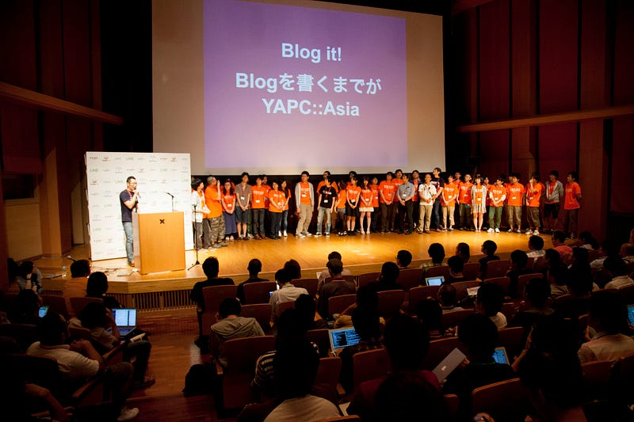
(c) Japan Perl Association
If you want to know more about YAPC::Asia Tokyo and what goes on there, feel free to contact me at on twitter (@lestrrat). And hopefully, see you at our next YAPC.
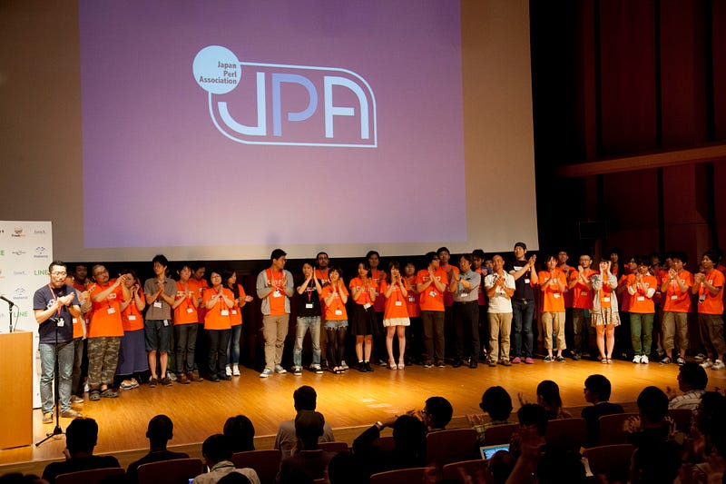